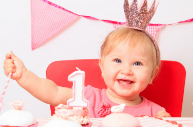

Развитие ребенка в течение 1 года месяц за месяцем
Первый месяц
Второй месяц
Третий месяц
Четвертый месяц
Пятый месяц
Шестой месяц
Седьмой месяц
Восьмой месяц
Девятый месяц
Десятый месяц
Одиннадцатый месяц
Двенадцатый месяц
С момента рождения до одного года ребенок меняется очень сильно. Младенцы растут и развиваются быстрыми темпами, и каждый месяц они достигают все новых и новых показателей. Разумеется, все молодые родители задаются вопросом: чего ожидать от младенца
и как понять, в правильном ли темпе он развивается. Независимо от того, как развивается ваш ребенок, существуют широкие возможности для того, чтобы он достиг необходимых показателей на любой стадии развития.
В течение первого года жизни ребенок достигает ряда показателей развития (начинает хватать предметы, лепетать, у него прорезываются зубы). Если ребенок достигает какого-либо показателя раньше обычного времени, другие могут развиваться у него позже,
потому что его тело в данный момент занято совершенствованием одного определенного навыка.
Учитывая возможность таких вариантов, родителям следует знать, какие показатели развития являются нормальными для ребенка в разном возрасте и чего ожидать в ближайшем будущем. Рассмотрим основные показатели развития, которых ребенок достигает в течение
первого года жизни.
Первый месяц
Второй месяц
Третий месяц 
Четвертый месяц
Пятый месяц
Шестой месяц
Седьмой месяц
Восьмой месяц 
Девятый месяц
Десятый месяц
Одиннадцатый месяц
Двенадцатый месяц 
В течение первого года жизни с ребенком происходят удивительные изменения. В частности, вес годовалого ребенка обычно в три раза больше, чем при рождении. Продолжайте следить за темпом развития ребенка. Однако при этом имейте в виду, что каждый малыш
развивается в индивидуальном темпе. Если к определенному возрасту ребенок еще не достиг какого-либо показателя развития из приведенного выше списка, это еще не должно быть поводом для беспокойства. Это вполне нормальное явление.